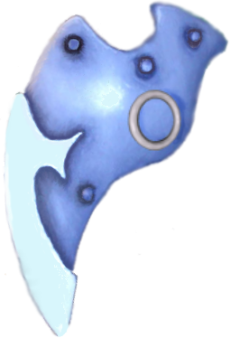
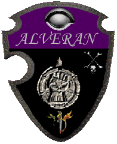

|

|
Das schwarze Brett
|
|
| Übersicht,
Allgemeines |
|
Offene Worte und Abschied (57  ) )
|
PDonnergott
 |
19.03.2016 ab 18 Uhr, Hamburg im Brauhaus
liese sich bei mir auch machen , ist die heimreise nicht so weit ^^ |
23.12.15 14:37
 |
|
Planet-Mors
 |
Ebenfalls von mir ein Danke.
Es dürfte nicht immer leicht gewesen sein, zwischen den Stühlen zu sitzen. |
23.12.15 15:12
|
|
Hippie Hasenfutter
 |
Zum Thema ´Aronius ausgraben´ möchte ich dann doch noch eine Bemerkung machen.
Als sich Mitte des Jahres die Verhandlungen mit dem Betreiber als zäh herausstellten, bin ich diesen Weg gegangen. Ich habe ihn aufgespürt, Kontakt aufgenommen, und wir hatten ein offenes Gespräch, welches mir die Augen geöffnet hat.
Das Wichtigste: Aronius möchte mit dem Thema Scherbenwelten nicht behelligt werden. Dies habe ich im Fortgang respektiert, und das wird sicher jeder hier genauso tun.
Was hier vom Support dargestellt wurde, entspricht exakt dem Ablauf der Dinge, wie ich ihn auch erlebt habe, eben als potenzieller neuer Betreiber. Lothar Döring wollte bis zu einem bestimmten Zeitpunkt tatsächlich Scherbenwelten in neue Hände geben.
Was die Sache scheitern ließ, dazu kann ich nur Mutmaßungen anstellen. Das Gespräch mit Aronius brachte mich allerdings zu der Überzeugung, dass es unüberbrückbare Differenzen in den Ansichten des Betreibers und des Urhebers waren, welche das Scheitern auslösten.
Konkret: Lothar Döring wollte Scherbenwelten versilbern, hatte auch ein lukratives Angebot vorliegen, hierzu fehlte es aber an einer Übereinkunft mit dem Urheber, denn veräußern kann man nur Rechte, die man auch innehat.
Jochen Stangl hatte hingegen keinerlei kommerziellen Interessen mehr an Scherbenwelten. Er hätte die Rechte der Community unentgeltlich überlassen.
Knackpunkt an der Sache: Jochen Stangl hat keinen Zugriff mehr auf Scherbenwelten, den hat allein Lothar Döring. Das betrifft nicht nur den Stand der Datenbank, also diese Runde, und die Verbesserungen der letzten 10 Jahre, sondern selbst den Code von Anno dazumal.
Warum Lothar Döring nach dem Scheitern der großen Lösung (Verkauf des Gesamtspiels mit allen Rechten) komplett geblockt hat und nicht mehr bereit war, mit irgendjemandem zu reden, bleibt sein alleiniges Geheimnis.
Ich hätte mit auch mit beiden Parteien separat eine Vereinbarung treffen können, sprich Lothar Döring für die Weitereintwicklung von Scherbenwelten ausbezahlt, sofern er die Daten zur Verfügung stellt, mit Jochen Stangl die Freigabe der Rechte, um diese Scherbenwelten-Runde kostenlos für die Community weiterlaufen lassen zu können.
Dann hätte ich die Voraussetzungen gehabt, nebenher das Spiel weiterzuentwickeln, und das war es, was ich immer wollte und wofür ich eine Menge Geld in die Hand zu nehmen bereit war.
Ach ja, dem Support gilt natürlich auch mein Dank als Spieler. Es gehört schon eine Menge dazu, sich ein Jahrzehnt lang als Prellbock zwischen einer anspruchsvollen, manchmal auf ungerechten, Community und einer oft lethargischen, zuletzt sogar destruktiven, Spielleitung aufreiben zu lassen und am Ende noch die Größe für einen sauberen Abgang zu haben. Respekt dafür! |
23.12.15 15:18
|
|
Baldur McMulenberc
 |
@Hippie: Ich bin absoluter IT-Laie, aber abgeleitet aus dem, was du schreibst:
- die Urheberrechte liegen noch bei "Aronius", dieser wäre bereit, sie abzutreten
- der "Neubau", den es zwischenzeitlich gab, ist doch an eben jenen Rechten gescheitert?
- wäre es demnach nicht möglich, das Spiel jetzt erneut nachzubauen, da ja eben die Rechte bei "Aronius" sind, er diese freigeben würde
- könnte man dabei nicht auf die damalige Arbeit des "Alternativentwicklerteams" (warst das vllt. sogar du?) aufbauen?
(- Ich bin mir sicher, irgendwo ist ein Denkfehler, da du sonst selbst schon auf die Idee gekommen wärst)
Davon abgesehen:
Danke für den Support vor allem für die ewige Geduld, auch schwierige Charaktere und deren Konflikte auszuhalten, inklusive der turnusmäßig der dann gegen eben diesen Support gerichteten Kritik.
Ein Punkt aber zuletzt noch (falls sich doch irgendeine Fortsetzung findet): Im Gegensatz zu Aronius bin ich der Auffassung, dass ein Supporter, der gleichzeitig Spieler ist, eben nicht anonym sein sollte. Nicht nur in den ca. 14 (?) Jahren SW, sondern auch in anderen Spielen hatte ich immer wieder den Eindruck, dass die Spekulationen, die durch solche Konstruktionen entstehen, mitunter verheerender sein können als mögliche Befangenheitsvorwürfe bei klaren Verhältnissen. Und das schreibe ich trotz meiner Erfahrungen mit der SW-Zeitung... |
23.12.15 15:31
|
|
Klaus Störtebeker
 |
Nachdem ich das alles gelesen habe, bin ich nun leider auch überzeugt, dass es bald enden wird.
Also vielen Dank Supporter für all die Mühen und Geduld! |
23.12.15 15:53
|
|
Sojus Bane
 |
Dickes danke auch von Sojus, Sucher und von mir. |
23.12.15 18:26
|
|
Chevonne
 |
ist denn hier kein anwalt in der community, der aronius unter die arme greifen könnte bzw. ihm die sache abnehmen könnte, um SW zu retten?
für mich klingt das nämlich so, dass jochen irgendwo auch verständlicher weise vor einem rechtsstreit scheut. vielleicht können wir dabei auch als community gegen diesen döring vorgehen. als gruppe ist so etwas sicher einfacher zu tragen als als einzelperson. |
23.12.15 18:35
|
|
Chevonne
|
ps: manchmal reicht nämlich schon ein schreiben von einem anwalt aus, um jemandem den kopf grade zu rücken. |
23.12.15 18:38
|
|
Torkon
 |
Es ist schade zu lesen, dass SW nun doch enden wird. Ich spiele zwar noch nicht so lange das Spiel, aber es hat mich doch sehr gefesselt (süchtig gemacht) *g*.
Mit den Supportern hatte ich zwar wenig zu tun, aber trotzdem Danke für eure Arbeit und allen ein fröhliches Weihnachtsfest und einen guten Rutsch ins neue Jahr.
Vielleicht findet sich jemand, der dieses Spiel übernehmen kann und weiter entickelt. Ich würde da auch im Rahmen meiner bescheidenen Möglichkeiten das Spiel unterstützen, wie wohl viele andere auch, wenn ich das richtig deute.
Es war ein sehr schönes Spiel.
Vielleicht wird es das auch wieder.
An alle Spieler auch ein fröhliches Fest und einen guten Rutsch ins neue Jahr.
|
23.12.15 18:38
|
|
VitaminC
 |
Also ich bruache keine Barden oder Hexen keine Minos oder 20ger Rüstungen für Magier...Dass ist ja was von Döring verändert wurde^^ Ich wäre mit einem Backup zum Startpunkt der Scherbe auch zufrieden.. Wie auch schon geschrieben finde ich da ein Verein aus der Comunity am besten für geeignet... Aronius wird doch sicher irgendwo eni Backup liegen haben oder Hippi?? Bei einem selbst Programierten Spiel sollte eine neu Programmierung auch möglich sein, wenn der Anreiz groß geung ist ;) Schade das Aronius sich nicht selber dazu Äußert oder nix mit dem Spiel zu tun haben will aber evtl ist dass auch besser wenns ein Rechtsstreit gibt...
Was ich aber verstehen kann ist das Aronius es nicht verkaufen lassen will durch den Betreiber schließlich war Aronius der das Spiel ins Leben gerufen hat und das meiste geleistet hat... |
23.12.15 18:59
|
|
Wurzelsepp
 |
Wow...nach all dem im-Dunkel-Tappen nun gleich so viele Infos...
Tja - als Bewertung dieser Vorgänge wurde ja im Grunde alles gesagt...kann mich nur anschliessen!
Und mein Respekt für den "Last Wichtel Standing" !
|
23.12.15 19:15
|
|
Kerwotan
 |
Dann mal Danke an den Support und an Hippie!
Sollte es irgendwann doch noch ein Spiel der Comunity werden, werde ich gerne mit Datenbank- und Programmierkenntnissen unterstützen.
Ansonsten, und ich gehe mal davon aus, dass wir uns in Scherbenwelten nicht mehr wieder sehen, fühlt euch alle ganz lieb geknuddelt, all meine lieb gewonnenen Freunde und auch all jene mit denen ich die Ehre hatte, die Kriegsbeile zu kreuzen.
Liebe Grüße
Kerwotan (ehem. Gredalor) Spieler
|
23.12.15 19:50
|
|
Chevonne
|
Angesichts der Beteiligung der SL in den letzten Monaten wage ich mal zu bezweifeln, dass sie bei der Weiterentwicklung wirklich aktiv beteiligt war und nicht nur Hutaufhaber. |
23.12.15 20:09
|
|
Laurina
 |
@VitaminC: Die ganzen Neuerungen mit Barden, Hexen, Minos und Co. brauche ich auch nicht. Scherbenwelten war schon in der Beta ein Klasse Spiel, das einerseits von den nahezu unbegrenzen Möglichkeiten im Spiel und der Komplexität lebte, aber andererseits eben sehr stark von der Community. Da brauche ich keine achwietolle Grafik und bahnbrechende Änderungen brauchte es auch nicht wirklich.
Wenn es irgend ein Revival von SW gibt, bin ich dabei! Mit Programmieren kenne ich mich nicht aus, mit Datenbanken so am Rande, wenn ich unterstützen kann, dann eher vom Spieldesign oder vom Support her. Dazu wäre ich auch gerne bereit! |
23.12.15 22:24
|
|
Tengri Lethos von Alirion
 |
Auch von mir ein herzliches Dankeschön für jahrelangen Support und viel Spass am Spiel.
Schöne Feiertage in die Runde |
23.12.15 23:31
|
|
Tamira
 |
Ich möchte auch ein großes Dankeschön an den Support aussprechen.
Ein Neuanfang von SW wäre eine tolle Sache, auch ohne die letzen Neuerungen. Wer braucht die schon. Ich habe vor über 10 Jahren mit SW begonnen und damals hat es viel Spass gemacht und es war immer spannend.
Frohe Feiertage Euch allen.
|
24.12.15 10:32
|
|
Aahz
 |
Danke
"Last Wichtel Standing" |
24.12.15 17:30
|
|
Das Wiesel
 |
Cheers |
24.12.15 18:35
|
|
Frankie
 |
Danke für die offenen Worte und Unterstützung.
Auch mit eiener Träne im Auge,
Frankie.
|
30.12.15 19:12
|
|
Nangilima Aryndeneth
 |
Über 10 Jahre sw als Spieler, es waren schöne und andere Momente, und auch wenn ich derzeit wenig Zeit für das Spiel habe, so werde ich es doch vermissen, vor allem all die anderen Spieler, die ich hier online und auch real kennengelernt habe.
Ich hoffe, dass ich es schaffe, am 19.03. dabei zu sein!
In diesem Sinne nicht nur ein Dank an den letzten einsamen Supporter und auch die anderen, die nicht ganz so lange durchgehalten haben, sondern auch an alle Spieler, die das Spiel so lange mit am Leben gehalten haben, denn ohne die Spieler würde es sw nie gegeben haben, ebenso nicht ohne Aronius, der ein wunderbares feines komplexes Spiel auf die Beine gestellt hat!
Man sieht sich immer 2 Mal im Leben, also sehen wir uns alle irgendwann irgendwo wieder, mal schauen, wo das ist ;-)
Ich wünsche allen einen guten Rutsch in ein erfolgreiches und wundervolles Jahr 2016! |
30.12.15 21:38
|
|
Dubliner
 |
Ein Dankeschön an den Support!
Über 10 Jahre hat es viel Spass gemacht, ich werde SW vermissen.
Einen guten Rutsch in ein erfolgreiches, shönes neues Jahr! |
31.12.15 3:25
|
|
David von Ressirp
 |
Danke an den Support für die nicht immer einfachen Aufgaben!
Schade, das die Möglichkeiten so begrenzt sind bei so viel Bemühungen, das Spiel am Leben zu halten...wo doch von den Schaltstellen nur ein kleiner Schritt notwendig wäre.
Schade, das so ein Spiel, welches seines Gleichen sucht, einfach endet...obwohl nur ein kleiner Schritt notwendig wäre.
Ich wünsche mir, dass die Leute, die sich das letzte halbe Jahr so in die Riemen gelegt haben, etwas in der Richtung an den Start bringen, wenn SW keine Zukunft mehr hat.
Dank an alle für die jahrelange Spielfreude, allen einen guten Rutsch und ein gesundes Jahr 2016 ff. |
31.12.15 7:04
|
|
Übersicht,
Allgemeines
|
|
|
|